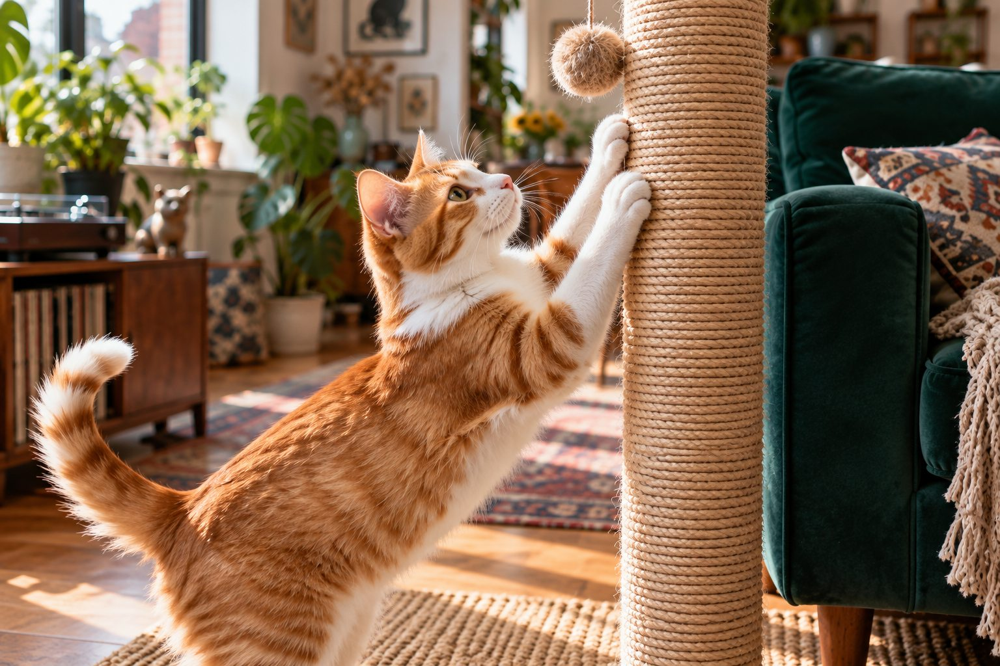

Offer a sturdy post or pad close to the furniture your cat chooses, and reward use of that alternative.
Cats scratch to stretch, maintain claws, and mark familiar places. A sofa arm may feel ideal because it is tall, stable, and close to the family. The task is to provide a better option in the same area, not to stop a normal behavior.
Find the preferred surface
Watch whether your cat scratches upright or flat and which texture it chooses. Offer a tall stable post, a cardboard pad, or both. Place the alternative beside the furniture first; moving it across the room makes the choice harder.
Posts near sleeping areas can work especially well because cats often scratch after waking. Multi-cat homes benefit from more than one option.
Scratching is a normal way for a cat to maintain claws, stretch, and leave visual and scent marks. The furniture may simply be the best scratching surface in the room: stable, tall enough, near a favorite resting place, and made of a satisfying material. Watch the cat in the moment. Does it stretch upward on the sofa arm after waking, or rake across a horizontal rug near a doorway? That preference tells you what kind of alternative to offer. A short, wobbly post in a remote corner is not an equal substitute.
Measure the usable height and stability of a new scratcher. The cat should be able to stretch fully without pulling it over. Try different textures, such as sisal, cardboard, or untreated wood, and place the scratcher beside the furniture first. Moving it later is easier once the cat uses it reliably. Punishing the scratch does not remove the underlying need.
Make the new choice rewarding
Praise your cat, offer a small treat, or play near the post when they use it. Do not carry the cat over and force its paws against the surface. Some cats enjoy catnip near a scratcher, though response varies.
Cover the vulnerable furniture temporarily with a suitable fabric protector or pet-safe tape if the material allows. Test products on a hidden patch first.
Make the better option obvious. Place a vertical post immediately next to the sofa arm the cat targets, or a horizontal board beside a rug. Invite play around the new surface and reward voluntary scratching there. Some cats respond to a little catnip, although not all do. Keep the alternative clean and replace it when it becomes unstable. If the cat goes back to the furniture, check placement and material before assuming training failed.
Protect the furniture temporarily with a cover or a surface that discourages scratching without frightening the cat. The aim is to interrupt a well-practiced route while the preferred alternative develops. Avoid spraying water, shouting, or startling devices. Those methods can increase stress and teach the cat to scratch only when no person is nearby. A predictable reward-based approach is easier for the cat to understand.

Maintain claws and reduce stress
Regular nail trims may reduce damage, but cats still need to scratch. Keep routines predictable and provide enough resting places and litter boxes, especially with other cats in the home.
Punishment can make a cat fearful without teaching a useful alternative. If scratching suddenly changes along with appetite or other behavior, contact your veterinarian.
Regular claw checks complement scratchers. Trim only the sharp tip when needed and when the cat tolerates handling; ask a veterinarian or groomer to demonstrate. Never pull a claw, force a struggling cat, or use a household tool that crushes it. A scratching surface does not replace all nail care, and nail trimming does not replace the need to scratch. The two jobs are different: one manages length and sharpness, while the other gives the cat a normal activity.
Stress can increase marking at prominent locations. If scratching rises after another pet arrives, a move, or blocked access to a favored room, review the cat's resources and safe resting options. Provide separate food, water, litter, resting, and scratching places when cats share space. A sudden behavior change alongside appetite, mobility, or litter changes warrants veterinary advice before it is treated solely as a training issue.
Be patient with placement
Once the cat reliably chooses the new surface, move it slowly if desired. A worn scratcher may be especially appealing because it carries the cat's scent, so replace it only when unstable or unusable.
The location of damage can be a clue. A doorframe may be a high-traffic boundary; a sofa near a window may be part of a waking-and-stretching routine. Place an appropriate scratcher at the chosen site rather than where it looks neatest to people. If you need the post in another location eventually, move it gradually after the cat has formed a reliable habit. Two modest, well-placed scratchers can be more useful than one elaborate tower far from the cat's usual path.
Keep the response consistent across the household. If one person rewards the cat at the post and another shoos it away from every scratching surface, progress will be confusing. Decide which surfaces are acceptable and keep rewards nearby. Photograph damage only to track whether it is declining; do not use the photo as proof that the cat is acting out of spite. Scratching is a species-typical behavior that needs an appropriate outlet.
Practical details
Why the sofa wins
A sofa arm is tall, steady, and located where people spend time. It also carries familiar scent. A short wobbly post in a distant room cannot compete with those advantages. Watch exactly where your cat scratches: the front corner, a horizontal rug, or a wooden frame. That observation tells you whether to buy or make a vertical, angled, or flat alternative.
A good post allows a full stretch and does not tip when the cat leans on it. Put it directly beside the furniture at first. Once the cat uses it reliably, move it a small distance at a time if needed. The post's placement is part of the training plan, not an afterthought.
Make a scratcher worth choosing
- Match direction Offer vertical posts for upright scratching and flat pads for cats that target rugs.
- Match texture Try sturdy sisal, cardboard, or another safe material similar to what the cat already chooses.
- Fix placement Put the scratcher beside the favored sofa or near a sleeping area before moving it.
- Reward the choice Praise, play, or offer a small treat when the cat uses the scratcher voluntarily.
Protect the furniture while teaching
A washable throw or a furniture-safe protective cover can reduce damage while the cat learns. Some people use a pet-safe temporary tape, but test it on an inconspicuous area and make sure it cannot trap fur or distress the cat. The barrier should make the furniture less rewarding while the nearby post remains easy to use.
Never punish or spray the cat for scratching. That may teach avoidance of you, not use of the post. Instead, interrupt only when necessary without frightening the cat, then encourage play near the alternative. Reward the moments you want repeated.
Watch for preference changes as the cat ages. A tall post that worked for a young cat may be uncomfortable for a cat with joint pain. A low, stable board may be easier, or the cat may need a route that does not require jumping to a tower. If the cat stops using a favored scratcher and has trouble climbing or grooming, mention the change to a veterinarian. Comfortable access is central to any behavior plan.
Maintain the environment as well as the equipment. Crowded entrances, sudden loud noises, or conflict with another cat can change where a cat chooses to mark. Give the cat a quiet route and more than one place to rest. When a cat has choices, it is easier to guide scratching toward a surface you accept. No single spray or post can replace a good placement and a calm household routine.
Account for stress and claw care
Regular nail checks can reduce snagging and damage, but trimming does not erase the need to scratch. Offer multiple scratchers in a larger or multi-cat home so no one has to compete for a single resource. Scratching can also increase during household changes or tension between cats. More predictable play and separate resting places may help.
If furniture scratching starts suddenly alongside hiding, appetite changes, or toileting problems, contact a veterinarian. Declawing is a serious surgical alteration, not a grooming shortcut. Ask about humane behavior and environmental options instead. A comfortable cat with useful scratching surfaces is a more sustainable goal than an impossible scratch-free home.
Imagine a cat that scratches the side of a chair every morning after breakfast. A stable post of similar height placed beside that chair, paired with a reward when the cat uses it, meets the same need in a new place. A temporary chair cover makes the old surface less rewarding while the new pattern develops. After several weeks of consistent use, the post can be moved a little if necessary. The change is gradual, not a one-day ban.
If the cat still avoids the post, vary one feature at a time: height, orientation, texture, or location. That small experiment provides useful information. For persistent damage or signs of fear and household tension, ask a veterinarian or qualified behavior professional to review the full environment. The goal is a home that protects the furniture and gives the cat a suitable, satisfying way to scratch.
A scratched piece of furniture tells you where the cat wants to perform a normal behavior. Use that information. A post at the other end of the house is unlikely to compete with a sofa arm beside the cat's favorite sleeping place. Start by matching position, height, and stability. Reward use of the new surface, protect the old one temporarily, and allow enough time for a habit to form. If the post is untouched, change one feature rather than replacing everything at once. This small experiment helps identify what the cat prefers.
Review the environment when scratching becomes suddenly more frequent. Has another animal arrived, has a doorway become contested, or has the cat lost access to a favored resting place? Provide resources in more than one location and ask a veterinarian about a dramatic behavior change. When claw care is needed, make trimming brief and gentle. Scratching and trimming serve different purposes; a cat still needs a satisfying scratcher after its nails are shortened.
Move the scratching habit without a battle
Place a stable scratching surface immediately beside the furniture your cat already chooses. Match the orientation: a cat that scratches a sofa arm may prefer a tall vertical post, while one that scratches a rug may use a horizontal board. Try different textures before assuming the cat is ignoring the alternative. Reward interest in the new surface with play or a small treat.
Protect the furniture temporarily while the new habit develops, but leave an acceptable place to scratch nearby. Trimming the sharp tips of claws can reduce damage, yet it does not remove the need to scratch. Never punish a cat for a normal behavior; startling it may only make scratching happen when you are absent. If several cats share the home, provide multiple surfaces in separate locations so one cat cannot control every resource.
Observe where and when scratching occurs. Many cats stretch and scratch after waking or near a social area, so a post hidden in a rarely used room may fail. Secure the post so it does not wobble. A surface that moves unexpectedly can make the cat avoid it. If scratching rises suddenly alongside hiding, aggression, or litter box changes, consider stress or pain and discuss the broader pattern with a veterinarian.
Reassess after a week. If the cat keeps returning to one corner, move a scratcher closer rather than trying to drag the cat to the preferred location. Once the new surface is used reliably, you can shift it gradually if needed. Keep the successful texture available.
Continue exploring
For a broader routine, read How Often Should You Change Cat Litter?, Why Is My Cat Suddenly Hiding?, and How to Help a Cat Feel Safe in a Carrier.
Frequently Asked Questions
Why does my cat ignore a scratching post?
It may be too short, unstable, far away, or the wrong texture.
Should I punish furniture scratching?
No. Redirect and reward use of a suitable surface.
Will trimming nails stop scratching?
It can limit damage but will not remove a normal need to scratch.
Editorial references
These resources informed the general guidance in this article. They do not replace advice tailored to your pet.
This guide offers general information. Your pet’s age, health, and history may call for a different plan. For medical concerns, ask your veterinarian.